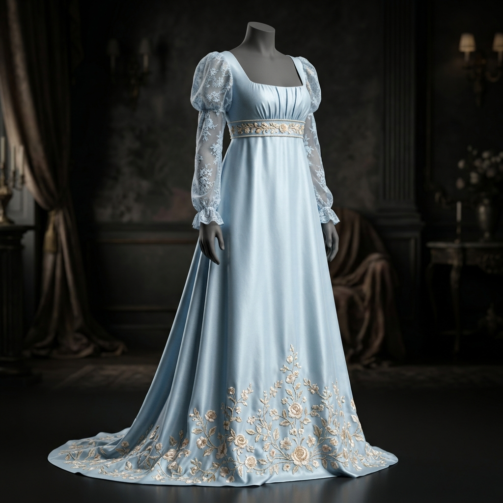

Đầm Dạ Hội Bridgerton
Recreating the iconic 19th-century Regency empire-waist silhouette from Bridgerton. Integrating delicate floral embroidery, sheer organza sleeves, and precise 3D drape physics in CLO3D.

Project Overview
Inspired by the elegance of Daphne Bridgerton's wardrobe, this project recreates an empire-waist Regency gown with modern digital pattern engineering. The design combines a structured square-neck bodice, delicate puffed sheer sleeves with lace embroidery, and a floor-length A-line silk skirt to achieve authentic historical draping without physical fabric waste.
Core Objectives
Empire Waist Patterning
Sheer Lace & Organza Mapping
Embroidery Tech Pack
Photorealistic 3D Simulation
Workflow & Process
1. Regency Silhouette Research
Studying early 19th-century corsetry, high-waisted seam placements, and Regency dress construction.
2. Pattern Block Construction
Drafting the fitted square-neck bodice, delicate puff sleeve caps, and gathered back skirt panels in Gerber Accumark.
3. CLO3D Material Physics & Rendering
Simulating powder-blue silk satin and transparent organza lace textures to achieve natural drape and subtle sheen.
4. Tech Pack & Embroidery Specs
Building a full Tech Pack specifying lace placement, pearl bead embellishments, and zipper/closure specifications.
Design Gallery
Technical Details
Challenges & Solutions
Challenge: Sheer Fabric Simulation & Bodice Structure
Simulating thin, transparent organza layers over a fitted empire bodice in 3D caused mesh clipping and unrealistic stiffness at the armhole gathering.
Solution: Multi-layer Mesh Tuning & Internal Piping
Adjusted CLO3D collision thickness to 0.5mm, added internal piping lines at the under-bust seam for structural support, and calibrated custom organza bending properties for delicate sleeve puffs.
Final Outcome
- Historical Regency Pattern DXF
- High-Fidelity CLO3D 3D Simulation
- Complete Embroidery & Trim Tech Pack
- Zero-Waste Couture Prototyping
Lessons Learned
Blending period costume history with 3D digital technology requires deep attention to historical seam placement. By accurately mapping the high empire waist and delicate sleeve gathers in 3D, this project proved that classic historical silhouettes can be efficiently engineered for modern couture production.